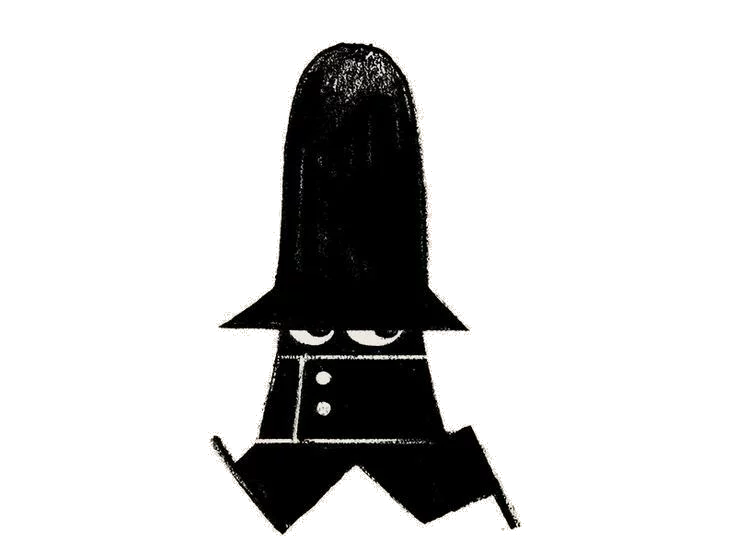
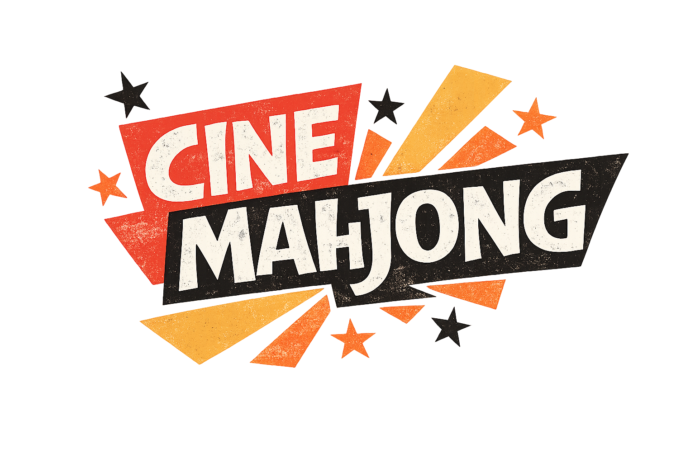

A treasury of interactive thinking activities for the classroom. Each one asks you to sort, classify, rank or connect ideas, and then defend your choices. The interesting learning lives in the grey areas. Choose a chapter below and open an activity to begin. Explore the subjects ▸
Deviant or Illegal?
Sort behaviours into "deviant but not illegal" and "illegal but not deviant". Then wrestle with the cases that are both, or neither.
Thinking skill: classifying & distinguishing Open ▸Folkways or Mores?
Decide which everyday expectations are minor customs and which carry real moral weight, and notice how the line shifts across cultures.
Thinking skill: judging moral weight Open ▸How Serious Is It?
Rank nine deviant acts from most to least serious in a forced diamond. Then share your arrangement to the class screen and defend your order.
Thinking skill: prioritising & justifying Open ▸
FBI Corkboard
Connect clues, evidence, suspects and sociological concepts across an investigation board. Every connection should be supported by evidence.
Thinking skill: synthesising evidence & building explanations Open ▸
Order Restored
Explore Émile Durkheim's functionalist view of society by investigating how institutions work together to maintain stability. Analyse evidence, identify social functions, and move through the four stages: Affirm, Clarify, Unify and Change.
Thinking skill: systems thinking & functional analysis Open ▸Ethos, Pathos, Logos
Classify persuasive examples by their primary appeal, whether credibility, emotion, or logic, then unpack the ones that blend all three.
Thinking skill: identifying persuasive technique ✎ Records results for the teacher Open ▸
CineMahjong
Match each film-technique frame to its name in a Mahjong-style pile: close-ups, camera angles, establishing shots and more. No typing, just tap a picture tile, then the title card that names it. Clear the pile and learn the cinematic language of The Merger.
Thinking skill: retrieval practice & cinematic terminology 🎬 Film Studies Open ▸